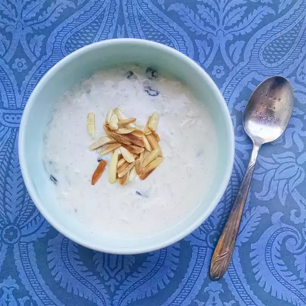

Punjabi-Kheer Recipe

How to make Kheer or so called Rice Pudding ?
Anyone can make rice pudding but today I will tell you how to
make punjabi style desi rice pudding which we call Kheer in Punjab.
Below is the list of ingredients that you would need to make this delicious dessert
- Rice
- Milk
- Sugar or Jaggery whichever you like
- Almonds and some raisins
- Desi Ghee
Steps:
- Wash the rice properly and add one spoon of desi ghee in a pan.
- Add the rice once pan is hot and let it simmer for a minute.
- Add milk and let it boil until our rice cooks properly.
- Add Jaggery or Sugar once the rice and Milk are well cooked and reach to your desired consistency.
- Add the almonds adn raisins and turn off the gas and your delicious punjabi kheer is ready.